Префектура Осака · Моригути · архитектура
Библиотека Моригути: как культурный центр эпохи «пузыря» стал первой библиотекой города
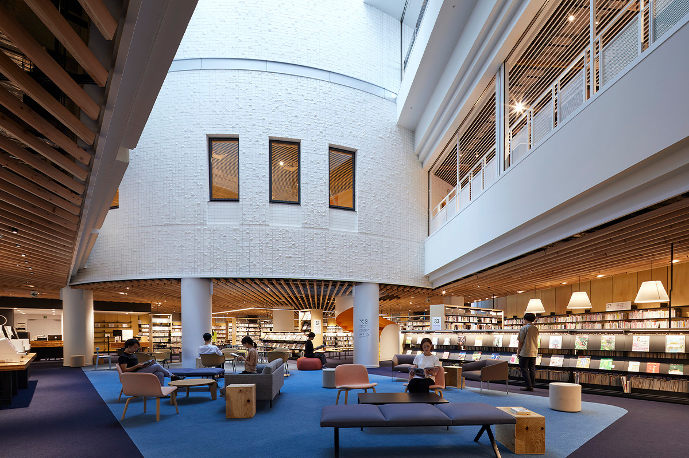
До 2020 года в Моригути, городе рядом с Осакой, не было ни одной публичной библиотеки. Теперь она есть, и разместили её не в новом здании, а в перестроенном культурном центре конца эпохи «экономического пузыря».
Город
Библиотека, которой не было
Моригути граничит с Осакой и живёт в её ритме: многие отсюда каждый день ездят на работу в большой город. Ещё Моригути известен храмом Райгодзи, куда паломники приходят с эпохи Камакура (1185–1333). В пяти минутах ходьбы от станции Дайнити стоит пятиэтажное здание с подземным уровнем. С июня 2020 года в нём работает Городская библиотека Моригути.
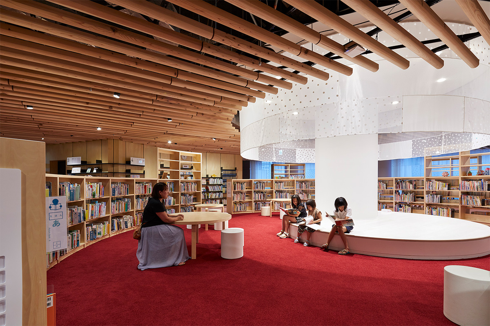
Удивительно, но до её открытия публичной библиотеки в городе не было вовсе. Книги жили в центре непрерывного образования «Мув 21», открытом на этом же месте в 1993 году, и в читальных комнатах восьми районных центров и центра культуры. Всего около 350 тысяч томов. «Мув 21» нарочно не оформляли как библиотеку по закону: центру хотели оставить свободу заниматься самым разным просвещением.
Новая библиотека сохранила эту многоликость. Книги остались главным делом, но здание по-прежнему служит и для занятий, встреч и выступлений. Библиотека вместе с этажами для курсов и кружков стала новой точкой притяжения для всего района.
Архитектура
Не сносить, а переосмыслить
Фасад здания оставили прежним, а всё внутри перестроили. Проект сделало токийское бюро SALHAUS. Его основали три архитектора: Кан Ясухара из Осаки, Масаси Хино из префектуры Хёго и Мари Тотидзава из префектуры Сайтама. Все трое начинали в мастерской Рикэна Ямамото, потом разошлись и в 2008 году собрались вновь уже в своём бюро. На их счету новый кампус Университета искусств Канадзавы, средняя школа Такада-Хигаси в Рикудзэнтакате, которая объединила три прежние школы, и пожарная часть в Сумите, построенная из древесины лесов префектуры Иватэ. Бюро охотно берётся за проекты, где город работает вместе с частными партнёрами.
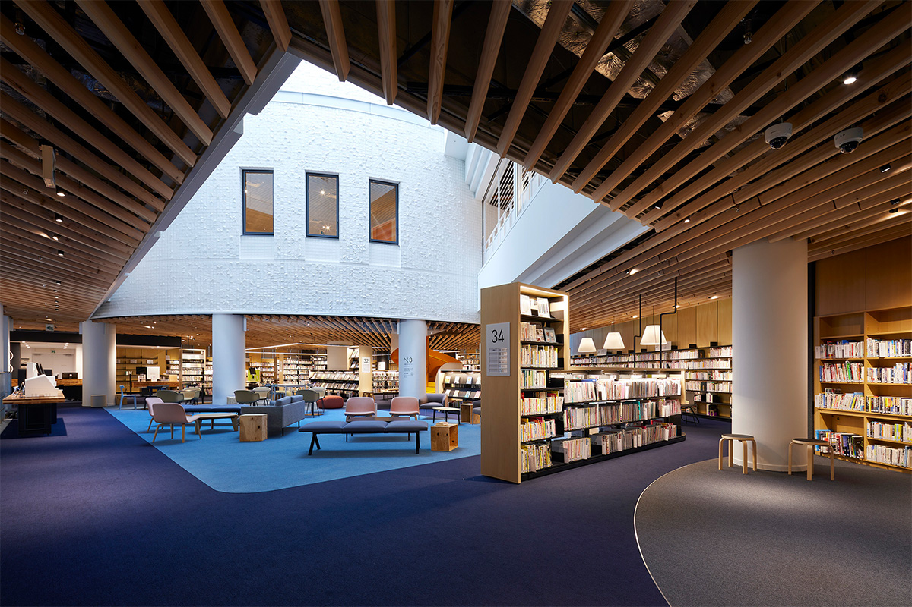
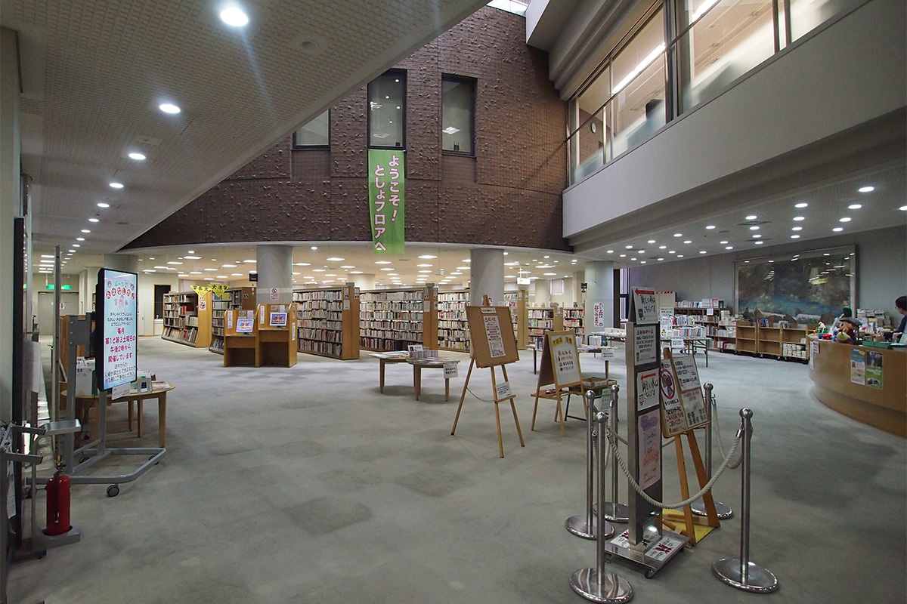
Архитекторы увидели в старом здании ценный запас разнообразных пространств и решили не ломать их, а дать им новую жизнь. Задача была сделать живую библиотеку, где проходят встречи читателей, гражданские проекты и спектакли, связанные с книгами. Центральный атриум прежде был сумрачным. Его стены выкрасили в белый, и он наполнился дневным светом. Вокруг этого светлого колодца заново собрали всё здание, а дополнительные лестницы связали этажи между собой.
Постройки конца 1980‑х и начала 1990‑х годов в Японии часто отличаются вычурными, непростыми для жизни объёмами. Здесь их смягчили близкими человеку материалами: деревом японского кедра, полупрозрачными шторами, своим цветом для каждого этажа. В итоге внутри просто хорошо, и не сразу понимаешь почему.
Внутри
По этажам
На первом этаже устроено пространство для общения примерно на 50 мест, где разрешено есть и пить. Здесь же детский уголок.
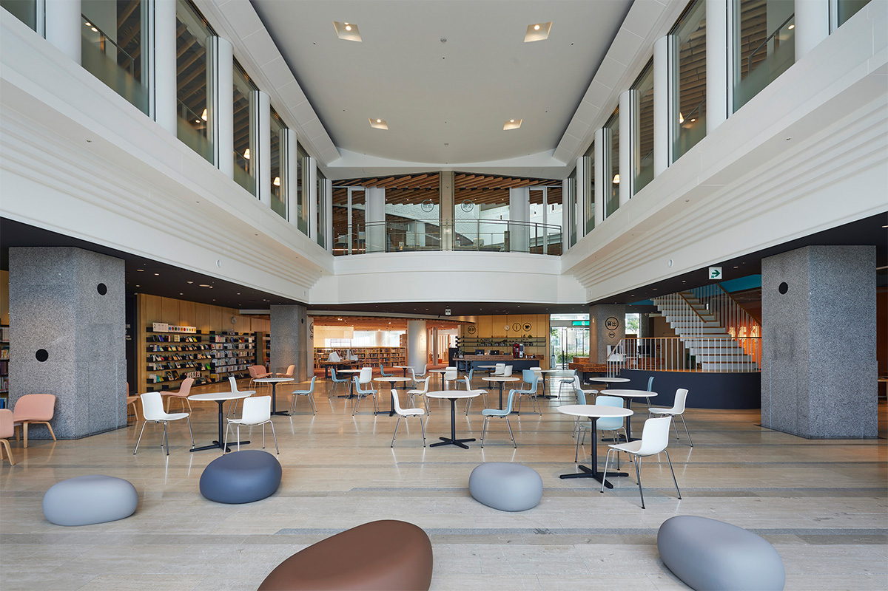
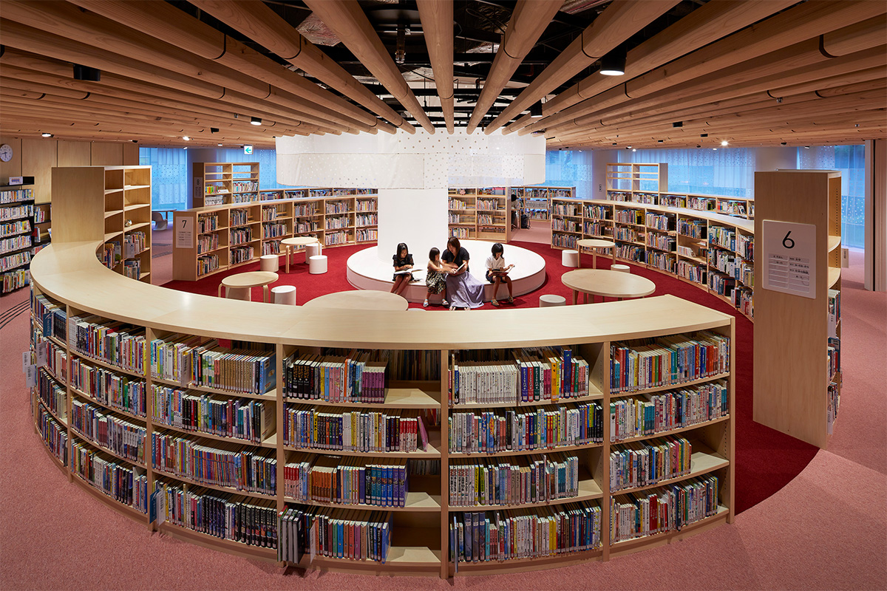
Второй этаж отдан чтению. Стулья в зале стоят самые разные, и каждый выбирает себе по вкусу. Кому нужна тишина, тот уходит в зону за стеклянными перегородками, а места для самостоятельных занятий открыты в атриум и связаны с читальным залом.
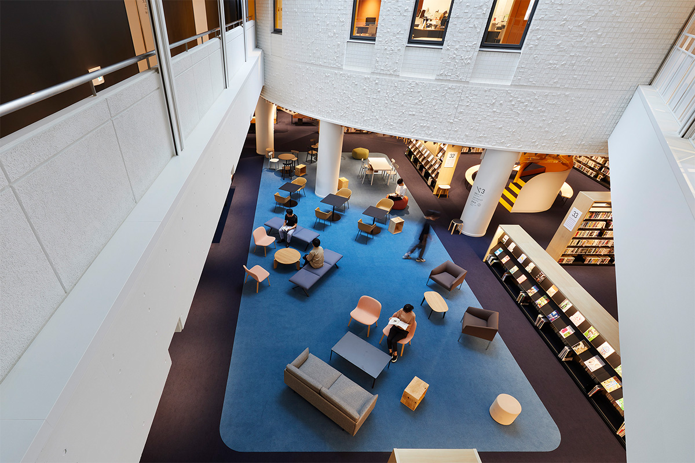
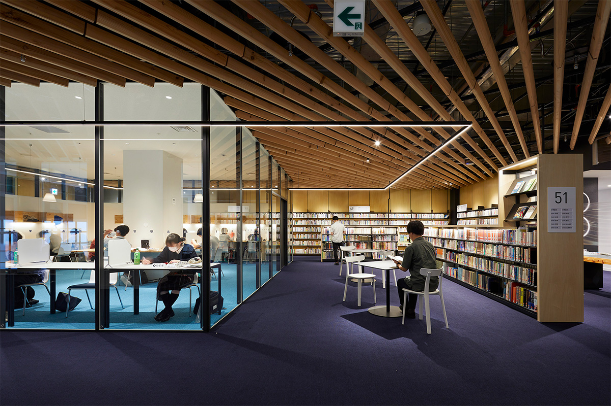
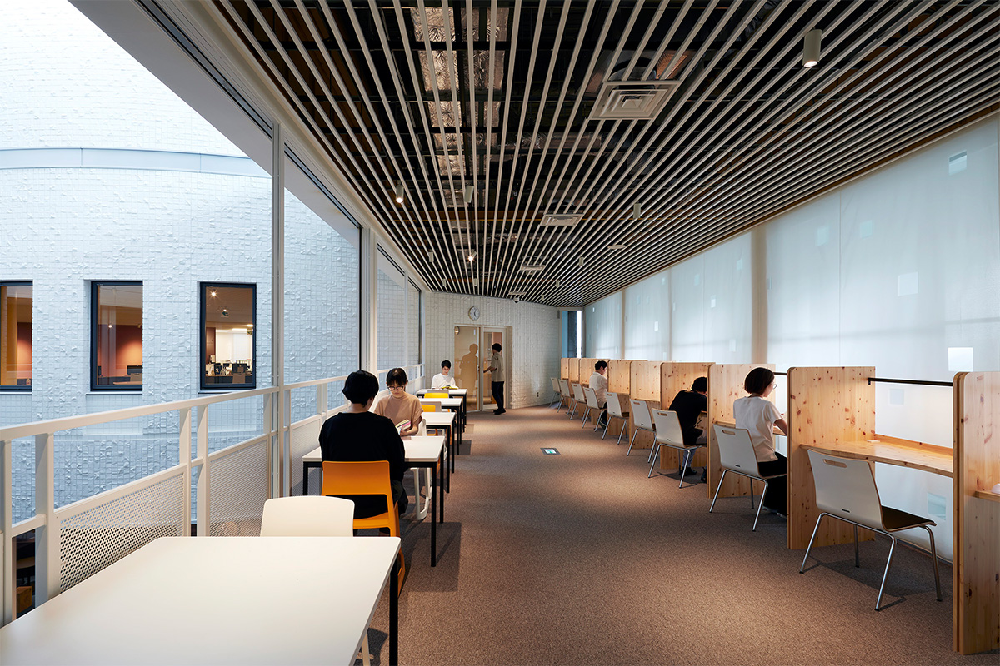
Для горожан есть студии, которые можно занять под свои проекты. На четвёртом этаже кроме многофункционального зала, доставшегося от прежнего центра, появился круглый зал: его переделали из планетария. Там ставят чтения по ролям и другие программы, связанные с книгами.
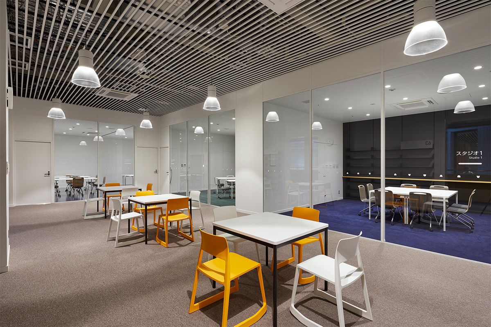
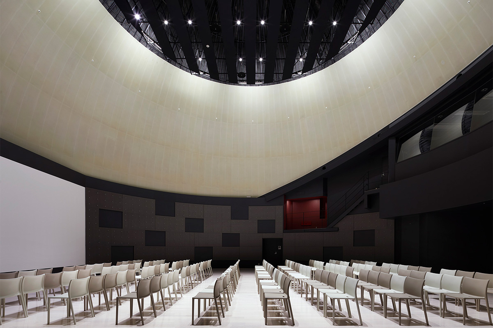
Библиотекой пользуются все поколения, от малышей до пожилых, и для каждого здесь что-то продумано. Это место, где собираются, учатся и знакомятся. Даже если вы приехали издалека, сюда стоит заглянуть ради самого здания.
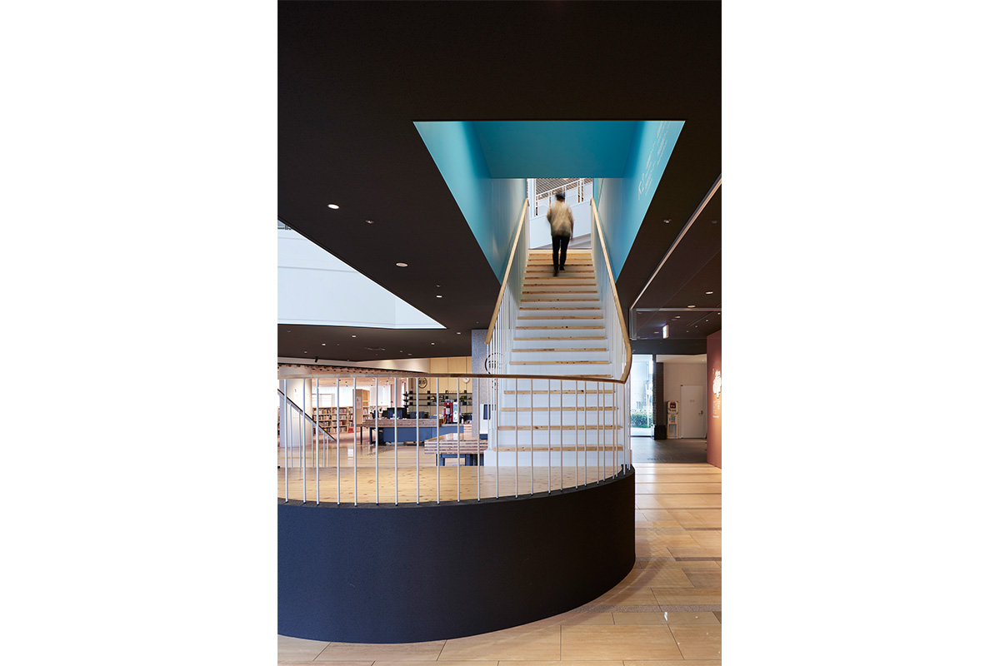
Городская библиотека Моригути
- Адрес
- префектура Осака, Моригути, Дайнити-тё, 2-14-10
- Телефон
- +81 6-6905-3921 (библиотека), +81 6-6115-5475 (этаж непрерывного образования)
- Часы работы
- 9:00–21:00
- Выходные
- вторник (если это праздник, то следующий день), с 29 декабря по 3 января, дни инвентаризации фонда
- Как добраться
- 5 минут пешком от станции Дайнити линии метро Танимати или от станции Дайнити монорельса Осаки
Фото: Нориюки Яно.